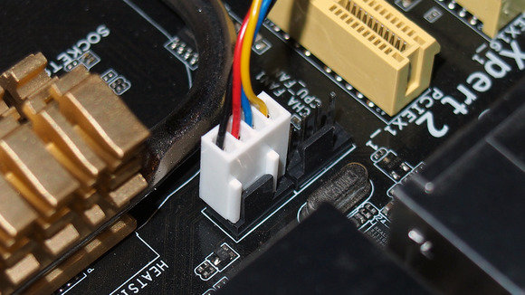
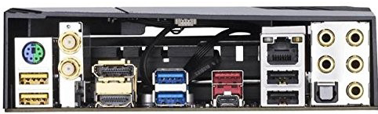
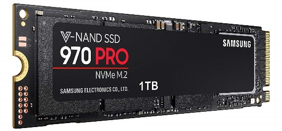
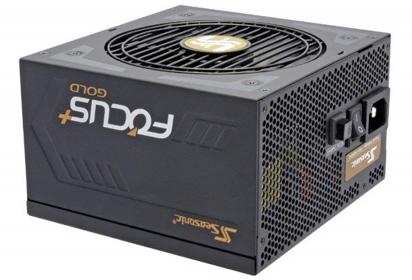
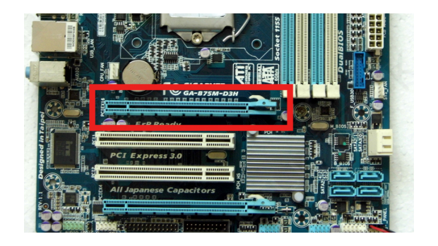
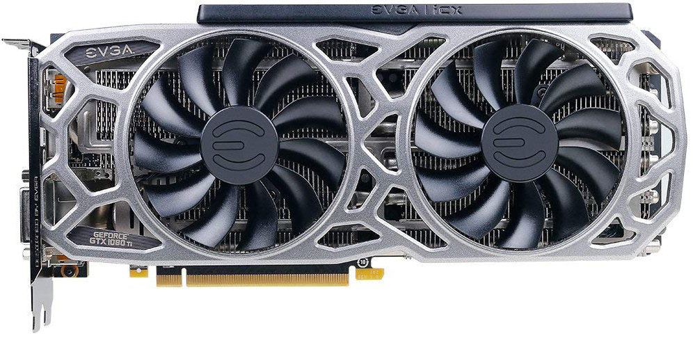

This is my website. I will be talking about how to choose PC parts, how to assemble parts, how to install software, and where to learn more
Once you have found the parts you want to use in your pc (after making sure they are compatible/have interoperability) you need to assemble them.
Assembling a pc can be one of the easier tasks in PC building, as most components were made to be connected
SAFETY WARNING: Make sure to always turn off the PC at the wall, and at the PSU, before attempting to remove or change parts.
Also make sure to always wear an anti-static wrist strap (connected to a metal surface, such as a PSU screw) to minimize static damage to hardware
Step 1: Gather tools
The first step is to PC building is to gather the tools you will need for the project: I have included a dropdown menu that shows the tools you need
Screwdriver (for slotted and Phillips head screws)
Wire cutters and strippers (not used often, but still useful to have)
Needle-nosed pliers
Utility knife
Small flashlight
Adjustable wrench
Small container to hold screws (such as an empty pill bottle)
Heat sink compound (for when you need to glue a heat-sink to the CPU)
Anti-static Strap (listed in the safety warning)
You may not need use every single one of these tools in every installation, but it is best to have all of them on hand in case you have a use for them.
You can buy most of these tools Here. An image of what you might be buying is displayed to the right of this text.
Warning: Using incorrect tools for a task can cause equipment damage, component damage and bodily injury.
Step 2: Gather Components (See components page)
After you have gathered all of the tools, you need to gather components. I have gone over this topic in detail in the components page.
Step 3: Preparing the case
You need to prepare your case for the components. To the left, there is an example of where the case pins may be along side my recommended Thermaltake View 71 case
To open the case, remove the screws/pins (if they have them). Some panels are removed by first sliding it back then lifting it away from the case. Some more modern panels (such as the ones on the Thermaltake View 71) do not need to be removed, and can slide/swivel open
Once you have opened the case, remove any unncecessary objects. This may include removing plastic packaging or cutting zip-ties. Make sure not to damage the case in the process.
Step 4: Ground yourself
I know I've said this in the safety warning, but I'm putting it here as well. Connect the anti-static wrist strap to a metal part of the case, such as a PSU screw. You may also attach it to a conductive metal surface.
Always ground yourself while handling components
Step 5: Assemble components in case
Now that you have prepared the case, grounded yourself, gathered tools and gathered materials, you can actually build the PC now.
I have included a video, and a summary of what the video is explaining
Step 5a: Install the case fan
Note: Some cases (like the one on the left) have a case fan pre-installed
Step 1: Find a fan with high air flow (measured in cubic feet per minute, or CFM) and low noise level (measured in decibels, or dBA)
Step 2: Hold up the fan to the mounting position so that the holes for screws line up with the holes in the case.
Step 3: Attach the fan to an unused fan header. The headers are keyed to ensure a proper connection.

Step 5b: Install the motherboard
Included with the mother board is an I/O bezel plate. This plate is a plate that covers the slots (such as the USB3 display port/HDMI port) at the back of the PC. An image of these slots is shown below.
Standoffs are installed in the case screw holes to create a riser that separates the case and motherboard. The screws install into the standoffs. Screws and standoffs should be included with the case.

To the left is a video, Follow these steps to install the motherboard in the case:
Step 1: Check for pre-installed motherboard standoffs, ensure the number and arrangement of them matches the holes found on your motherboard. Standoffs make space between the motherboard and the case. You also screw the screws in them.
Step 2: Find your motherboards I/O shield (The I/O shield matches the ports in the image above) and push it into the rectangular slot in the back of your PC case. Match the pattern of cutouts to the arrangement of ports on the back of your motherboard.
Step 3: Lay your motherboard down inside the case. Line up its rear ports with the corresponding holes in the I/O shield you just installed on top of the standoffs installed, or pre-installed, in your case.
Step 4: Screw the motherboard down with the screws that came with your case. Make sure you use the right ones here, as you don’t want to thread the standoffs, in case you need to remove them at a later date.
Caution: To prevent damage to the motherboard it must only contact the standoffs and screws. If it touches the case something is wrong.
Step 5c: Install the CPU
To install the CPU:
The CPU is the brain of the computer. It is installed on the motherboard in the CPU socket.
To install the CPU:
Step 1: Find the corner marking that designates pin 1 of the CPU as shown below. Consult the manufacturer's documentation for specific information about your processor. As you can see, the Intel i7 CPU to the left has an arrow on the first corner.
Step 2: Lift the small metal rod next to the CPU socket
Step 3: Find the corresponding marking on the CPU socket and insert the CPU so that the markings are lined up.
Step 4: Push the rod down to lock the processor in place
Step 5d: Install RAM
Depending on the type, for example DDR3 or the more recent DDR4, RAM needs to be installed in specific slots, which the motherboard needs to have
Step 1: Read your motherboards manual to find out which RAM slot to fill first, and whether to store two of the same RAM cards alternately (slot 1 then slot 3).
Placing RAM in the wrong slots can degrade performance.
Step 2: Move the retention levers (plastic on hinge which holds RAM in place) so that RAM can fit in the slot.
Step 3: Slide the RAM in the slot, making sure it is the correct slot (DDR4 RAM goes in a DDR4 slot, some slots need the RAM installed first. Make sure to not force the RAM into the slot as this may damage a component
Step 5e: Install the CPU fan (which can be a water cooling variant)
If you're thinking of water cooling your PC, while I don't have much experience in this, an excellent tutorial can be found HERE . I highly recommend reading/watching either of these tutorials as they are created by proffesionals, not high school students.
If you're air cooling your CPU: I recommend this tutorial, however there will be instructions below
There are two main components in a CPU fan, the fan and the heatsink.
Step 1: Place thermal compound to the CPU following the instructions provided with the compound.
Step 2. Set the fan assembly on the CPU with mounting tabs aligned.
Step 3. Pull the locking rod down on the fan assembly to lock into place.
Step 4. Connect the fan assembly's power connector to the motherboard. Consult the manual to determine proper placement.
Caution: Failure to apply thermal compound will result in insufficient cooling and will cause damage to the CPU and/or motherboard.
Step 5f: Install HDD
Note: Some people prefer using SSD's due to their high performance. There are no moving parts to an SSD, information is stored in microchips. Unlike an HDD which uses a mechanical arm with a read/write head to move around and read information from the right location on a storage platter. This difference is what makes SSD so much faster. However, most PC builders install the HDD first (if you are installing an HDD) and then the SSD when the PC is assembled, which I highly recommend.
The hard drive is the device that stores all of your data. It is usually 3.5 inches wide and needs to be mounted so that you can gain access to the cable connections on the back. If that is not possible you may need to connect cables before you install the drive.
To mount the drive:
Step 1: Find an appropriately sized drive bay to install the drive in. The left image shows my chosen case from the inside, you can see a drive bay on the far right. If you have trouble finding a place to mount the drive consult your case documentation for suggestions.
Step 2: Slide the drive into place until the screw holes on the sides are lined up with the holes in the case.
Install the screws.
Step 5f (optional): Install an SSD
 The SSD is installed usually in m.2 port or an SSD drive bay
Step 1: Unscrew and remove the sides of your computers case. Some have latches holding the sides in place, which must be pushed open. Make sure you have clear access to the motherboards SATA ports (which is the main cable type which connects the SSD to the motherboard) and hard disk bays.
Step 2: Place the SSD into its mounting bracket or a removable bay, line it up with the holes underneath, then screw it in.
Step 3: Connect the L-shaped end of a SATA cable to the SSD, and the other end to a spare SATA port. Connect a SATA power cable to the SSD. For a fresh Windows installation, disconnect any other hard disks inside your PC.
Step 4: Insert a USB or DVD stick with the OS (operating system) you will be using and turn on the PC. Press the key to see the boot menu and select the USB or DVD. Now follow the instructions to install Windows 10 on the SSD. Once the installation is complete you can put other hard drives back in.
Step 5g: Install the PSU

To install the PSU
Step 1: Set the power supply's voltage switch. If there's a voltage switch on the power supply, switch it to the 110v or 115v setting. This will ensure that your power supply provides ample power without damaging the components to which it's connected. Not all power supplies have voltage switches.
Step 2: Find the power supply's intended location. Power supply units (PSUs) typically sit at the top of the case; this is why the computer's power cable usually plugs into the top-back section of the case.
Refer to your cases/computers instruction manual for the proper placement of the power supply unit. Look for a rectangular cut-out on the back of the case, this is for the power supply to draw power from the wall.
Step 3: Screw the power supply into place. With the "back" of the power supply unit pressed against the back of the case, insert the included screws to lock the power supply into place. See Step 5j for further use of the PSU
Step 5i: Install the GPU


The GPU is installed in the Pci-e 16x slot of the motherboard. Keeping in mind that some motherboards come with a graphics card pre-installed (this isn't a GPU unit, just a "chip")
Step 1: Find the Pci-e 16x slot (shown above) and "unlock it", meaning unclipping/moving the clips to the side so you can slide the GPU in.
Step 2: Slide the Pci connector, on the Graphics card, into the slot. If it doesn't fit don't force it.
Step 3: Lock it/Secure it with the clips
Step 4: Screw the rear bracket/thing that holds the gpu in place in.
Step 5i: Connect the cables
Warning, make sure the PSU is turned off at both it's switch and at the wall before wiring
Step 1: Connect the fans to the motherboard. There is usually a fan for cooling the CPU, as well as, one or two on the case. Refer to the motherboard manual for the specific location, but the fan connectors are usually in the general vicinity of the CPU (which is under the heatsink/fan unit)..
Step 2: Connect the hard drive to the motherboard. There are two types of Hard drives, SATA drives and IDE drives. To wire an IDE drive, connect an IDE cable from the primary IDE to the hard drive. If you are using SATA drives, use SATA cables instead.
Step 3: Connect the case wires to the motherboard. Refer to the motheboard manual for exact wiring.
Step 5: Connect any additional cables, such as USB's. The motherboard manual can give you exact locations.
Step 6: Connect the power supply to the motherboard and drives. There should be a 20-pin connector, which can be plugged into the motherboard. The location of the connector is usally in the upper right hand corner, but this can differ between motherboards. Some CPU's have an additional four pin connector that may go next to the 20 pin connector or near the CPU. This depends on the CPU being used. Plug the SATA/Molex power connectors to the back of the drives. Some video cards require a six-pin power connector as well.
Step 7: Connect the Monitor (which meets system requirements, meaning it is good enough, or not too good, for your system) to the Motherboard (after closing the case) with an HDMI cable.


 You need to prepare your case for the components. To the left, there is an example of where the case pins may be along side my recommended
You need to prepare your case for the components. To the left, there is an example of where the case pins may be along side my recommended  Step 1: Find the corner marking that designates pin 1 of the CPU as shown below. Consult the manufacturer's documentation for specific information about your processor. As you can see, the Intel i7 CPU to the left has an arrow on the first corner.
Step 1: Find the corner marking that designates pin 1 of the CPU as shown below. Consult the manufacturer's documentation for specific information about your processor. As you can see, the Intel i7 CPU to the left has an arrow on the first corner.